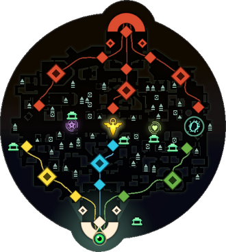
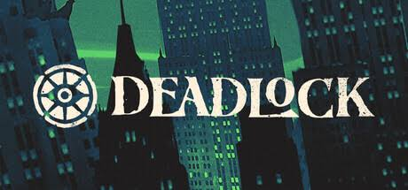
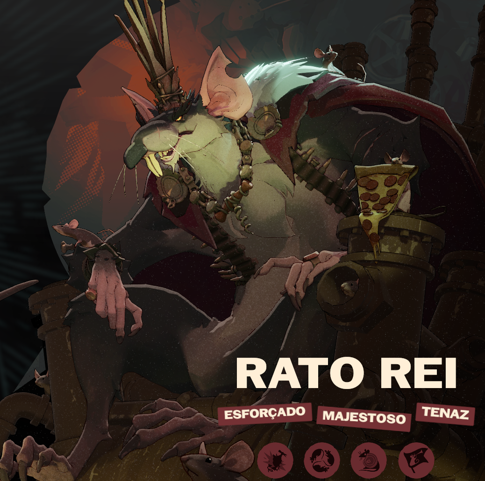
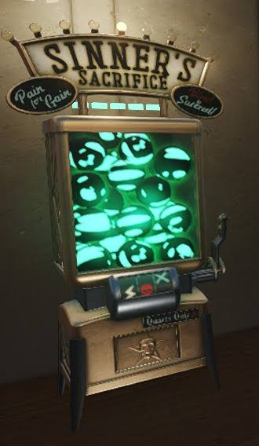
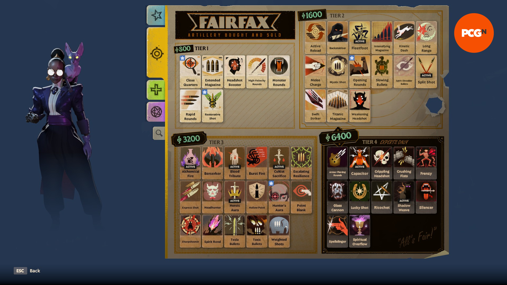
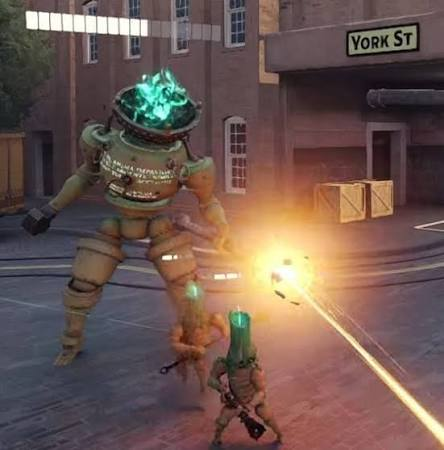
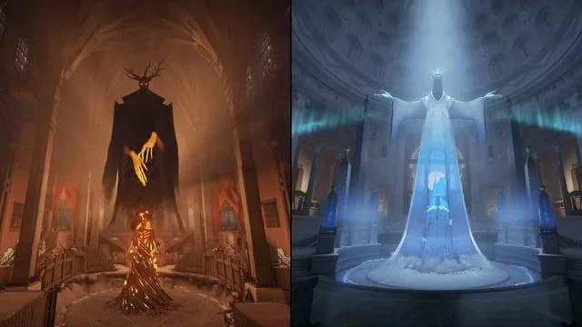
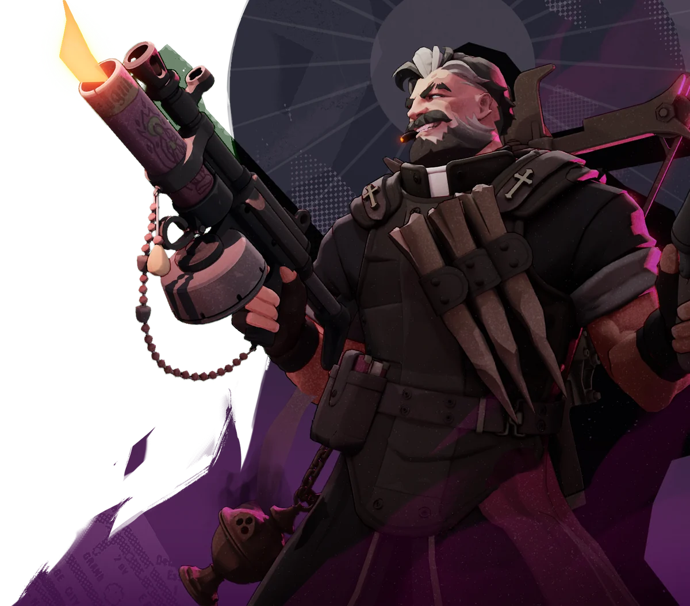

Domine as rotas
Avance pelas rotas junto dos seus Troopers.
Guia para iniciantes do novo jogo da Valve.

Deadlock é a tentativa da Valve de misturar dois gêneros que, à primeira vista, parecem bem diferentes: o hero shooter e o MOBA.
Trazendo a combinação perfeita das melhores caracteristicas de ambos os genêros. A movimentação frenética de um jogo de tiro em terceira pessoa com a estratégia, o sistema de progressão e as batalhas por objetivos de um MOBA. O resultado é um jogo em que não basta ter uma boa mira. Você precisa de estrategias e uma tomada de decisões. Cada partida exige decisões constantes, e uma boa jogada não depende apenas de quem consegue eliminar mais inimigos, mas também de quem entende melhor o funcionamento do mapa.
Deadlock nem lançou para o publico ainda mas já possui mais de 30 personagens, cada um com uma gameplay e tema completamente diferente do outro, desde estilo de gameplay para o conceito e design do personagem.
O jogo consegue explorar diferentes estilos de jogabilidade sem se tornar repetitivo, oferecendo uma variedade de personagens capaz de agradar praticamente qualquer tipo de jogador. Alem de que, cada personagem possui uma identidade própria, seja por seu visual, personalidade, história ou habilidades, fazendo com que todos tenham algo único a oferecer. Você não escolhe apenas aquele que melhor combina com seu estilo de jogo, mas também aquele cuja personalidade e conceito mais lhe agradam, criando uma conexão que torna a experiência ainda mais divertida e faz com que você queira conhecer cada vez mais esse universo.
Como exemplo:

Um dos personagens favoritos da comunidade, que é muito prezado pelo seu design engraçado mas com muito detalhe. Sem contar que Jogos desse genero nao costumam lançar personagens que seriam considerados "feios" ou muito detalhados pois eles focam muito em poder vender skins, mas Deadlock mostra que o jogador vem em primeiro lugar dadno um pacote completo para um personagem tão simples.
Já é uma regra básica do mundo dos games, se a Valve ta fazendo, o Jogo vai ser sucesso.
A empresa já é bem famosa por diversos jogos como
É claro que nem todo jogo da empresa se tornou um sucesso, e Deadlock ainda precisa evoluir bastante. Mas o potencial da combinação de gêneros, a variedade de personagens e as constantes atualizações durante o desenvolvimento tornam o projeto interessante de acompanhar e de se investir.
Atualmente, Deadlock ainda não está disponível para o público geral. O acesso é limitado a convites enviados por pessoas que já participam do playtest. Mas nada que uma Comunidade dedicada não possa resolver. Segue o passo-a-passo
Por exemplo "Hello, can i have an invite! friend code: (seu código de amigo)"
Ápos essa etapas, você poderá baixar o Jogo e aproveitar.

Avance pelas rotas junto dos seus Troopers.

Use as almas para comprar itens e fortalecer seu personagem.

Escolha os itens certos conforme a situação da partida.

Derrote os Guardiões e os Walkers para abrir caminho.

Destruir o Patron inimigo é o objetivo final da partida.

Teste alguns personagens e veja com qual se diverte mais.